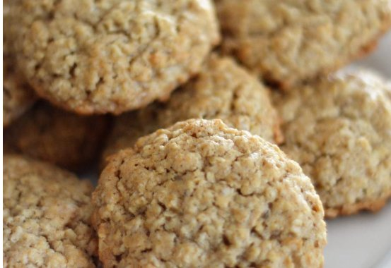

Oatmeal Cookies

Ingredients
- Flour: 2 cups all-purpose flour
- Cinnamon: 1 ½ teaspoons ground cinnamon
- Baking Soda: 1 teaspoon baking soda
- Salt: 1 teaspoon salt
- Butter: 1 cup of butter
- Sugar: 1 cup sugar
- Eggs: 2 large eggs
- Vanilla: 1 teaspoon vanilla
- Oats: 3 cups oats
Directions
- Whisk flour, cinnamon, baking soda, and salt together in a medium bowl until well combined.
- Beat butter, 1 cup white sugar, and brown sugar in a large bowl with an electric mixer until creamy, at least 2 to 3 minutes. Beat in eggs, one at a time, then mix in vanilla. Gradually mix in dry ingredients until well combined. Add oats and mix until thoroughly incorporated. Cover the bowl and chill dough in the refrigerator for at least 1 hour.
- When ready to bake, preheat the oven to 375 degrees F (190 degrees C). Spray two cookie sheets with floured cooking spray. Place water in a small bowl and 2 tablespoons sugar in another small bowl.
- Roll chilled dough into walnut-sized balls, and place 2 inches apart on the prepared cookie sheets. Dip a large fork in water, then in sugar, and use to flatten each cookie, rewetting and resugaring as necessary.
- Bake in the preheated oven until light golden brown around the edges and centers are nearly set, 8 to 10 minutes, switching racks halfway through. Allow cookies to cool on baking sheet for 5 minutes before transferring to a wire rack to cool completely.